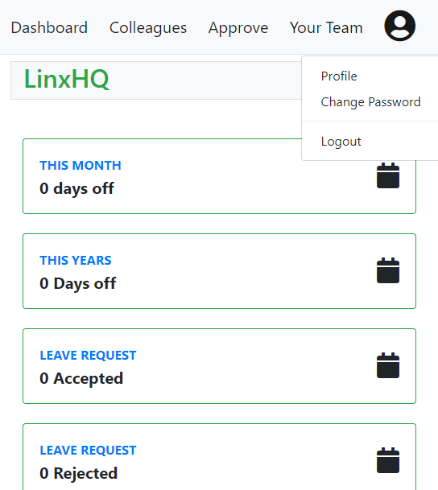
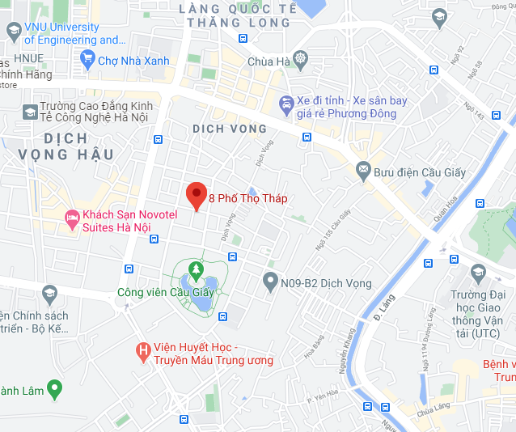

ĐẠI HỌC KHOA HỌC TỰ NHIÊN
ĐẠI HỌC QUỐC GIA HÀ NỘI
BÁO CÁO MÔN HỌC
ĐỒ ÁN PHẦN MỀM
ĐỀ TÀI
ỨNG DỤNG XIN NGHỈ PHÉP ONLINE
Giảng viên:
- TS. Vũ Tiến Dũng
- TS. Nguyễn Thị Bích Thủy
Người hướng dẫn:
- Giám Đốc Công Ty linxHQ: Phạm Ngọc Cường
Sinh viên:
- Nguyễn Thế Hợp - MSV: 18001142 - K63A4 MT&KHTT
Khoa Toán – Cơ – Tin Học, Trường Đại học Khoa học Tự Nhiên – Đại học Quốc gia Hà Nội
Hà Nội, Ngày 23/08/2020
Mục lục
- Lời mở đầu ......................................................................................................................................................... 3
- Giới thiệu chung .............................................................................................................................................. 4
- Công việc triển khai
........................................................................................................................................
7
- Phân tích thiết kế hệ thống ................................................................................................................ 7
- Xây dựng giao diện người dùng .................................................................................................... 13
- Triển khai các dịch vụ back-end ...................................................................................................... 14
- Kết nối giữa Back-end và Front-end ............................................................................................. 15
- Thực hiện bảo mật ............................................................................................................................... 15
- Triển khai lên Heroku .......................................................................................................................... 17
- Viết báo cáo ............................................................................................................................................ 18
- Kết quả
..............................................................................................................................................................
19
- Mã nguồn ................................................................................................................................................ 19
- Giao diện .................................................................................................................................................. 19
- Phụ lục ............................................................................................................................................................... 23
- Nhận xét của công ty
..................................................................................................................................
24
- Về công ty ............................................................................................................................................... 24
- Người hướng dẫn ................................................................................................................................. 25
- Nhận xét về quá trình thực tập ....................................................................................................... 25
Lời mở đầu
Bác Hồ có dạy rằng "Học phải đi đôi với hành. Học không hành thì vô ích. Hành không học thì không trôi chảy". Thế nhưng không dễ dàng để chúng ta có được một môi trường tốt, vừa học vừa thực hành.
Vì vậy, em xin chân thành gửi lời cảm ơn đến cô Nguyễn Thị Bích Thủy cùng thầy Vũ Tiến Dũng đã tạo điều kiện cho chúng em được tham gia khóa thực tập tại các công ty. Tại đây chúng em được học và làm việc trong môi trường thực tế, vừa học vừa thực hành. Cũng nhân đây, em xin gửi lời cảm ơn đến anh Phạm Ngọc Cường - Giám đốc công ty LinxHQ đã hướng dẫn, chỉ bảo em trong quá trình thực tập tại công ty.
Một lần nữa, em xin chân thành cảm ơn!
I. Giới thiệu chung
Ngày nay, sự phát triển của công nghệ thông tin bùng bổ mạnh mẽ. Tất cả những công việc bàn giấy sẽ dần dần được thay thế trên nền tảng Internet, giúp giảm chi phí về mặt thời gian, tiền bạc, công sức.
Khi xem xét đến vấn đề quản lí nghỉ phép của 1 đơn vị hay tổ chức nào. Chúng ta sẽ mất các bước như mua(xin) mẫu đơn. Sau đó điền và nộp lên người quản lí để chờ xét duyệt. Điều này đã không còn phù hợp với ngày nay nữa, chúng ta có thể thay vào đó là sử dụng một ứng dụng xin nghỉ phép online. Cụ thể :
- Nhân viên có thể nộp đơn xin nghỉ phép từ xa(remote) thông qua mạng internet.
- Người quản lí cũng có thể dễ dàng quyết định và phản hồi cho nhân viên thông qua mạng internet.
Điều này sẽ giúp tiết kiệm được thời gian chờ đợi nộp đơn và thời gian phản hồi. Ngoài ra, nó cũng giúp số hóa các thông tin, dễ dàng tích hợp với các module khác của hệ thống quản lí nhân viên.
Bài toán đặt ra: Xây dựng một ứng dụng web cho phép quản lí(nộp và xác nhận) đơn xin nghỉ phép online.
1. Cụ thể bài toán
Phát biểu
Linx cần phát triển một ứng dụng web cho phép các nhân viên nộp đơn xin nghỉ phép online. Với mỗi đơn xin nghỉ cần có các thông tin:
- Tên của nhân viên
- Ngày bắt đầu và ngày kết thúc của kì nghỉ
- Lí do xin nghỉ
- Tên của người chấp thuân
Nhân viên có thể xem trạng thái(chấp thuận - từ chối - đang chờ) của các đơn. Nếu nhân viên được gán là người chấp thuận cho các đơn thì có thể tiến hành Chấp thuận cho các đơn đó. Nhân viên có thể xem trạng thái các đồng nghiệp của mình
Để sử dụng module này, người dùng phải đăng nhập với tên đăng nhập(email) và mật khẩu
Các yêu cầu bao gồm:
- Sử dụng Java kết hợp Spring Framework và Hibernate
- Front-end code là HTML, CSS, JavaScript. Mong muốn AngularJS 6
- Code phải được cấu hình và có thể triển khai sử dụng Maven
- Cơ sở dữ liệu yêu cầu: MySQL
- Mã nguồn và lược đồ cơ sở dữ liệu phải được commit trên các git repos
2. Công nghệ và công cụ sử dụng
Các công nghệ back-end
- Java 11 làm ngôn ngữ lập trình
- Spring Framework: Spring Core - Spring Boot - Spring Web - Spring Data - Spring Security
- Hibernate: ORM Framework sử dụng trong JPA
- MySQL làm cơ sở dữ liệu
- Maven Project Management: Build, quản lí các dependency
- Swagger2
- Git Version of Control
- Heroku: Deployment
- Developer tool: Dev-tool, Lombok, IntelliJ IDE, Postman
Ưu điểm của Spring
- Mạnh mẽ
- Bảo mật*
- Test dễ dàng
- Có cộng đồng lớn mạnh
- Spring Framework cung cấp mô hình lập trình và cấu hình toàn diện cho các ứng dụng
doanh nghiệp dựa trên Java hiện đại - trên bất kỳ loại nền tảng triển khai nào.
- Spring sử dụng Dependency Injection(DI) để quản lí sự phụ thuộc của các thành phần(components)
với nhau, giúp sử dụng và quản lí dễ dàng.
- Spring framework chia thành nhiều module riêng biệt, do đó việc sử dụng các tính năng trong
Spring framework rất tự do.
- Spring không phát minh lại toàn bộ. Nó sử dụng các framework khác như Hibernate, Logging
Framework,...
Nhược điểm của Spring
- Tuy nhiên, Spring có nhược điểm là phải cấu hình rất nhiều mxl. Điều này gây mất thời gian, khó khăn cho việc phát triển. Tuy nhiên, Spring Boot ra đời đã giải quyết vấn đề này, mục tiêu là giảm tất cả những cấu hình xml bằng cơ chế tự động cấu hình(AutoConfiguration). Phù hợp cho việc xây dựng các restful API. Booooot!!!!
Hibernate
- Hibernate có rất nhiều ưu điểm so với JDBC:
- Giảm đáng kể số lượng mã nguồn(Connection, Prepare Query, Mapper, ...)
- Không phụ thuộc vào cơ sở dữ liệu do cơ chế Object Relational Mapping - ORM
- Cơ chế Lazy Loading giúp cải thiện hiệu suất
- Loại bỏ các khối lệnh Try-Catch
- Cơ chế Caching giúp cải thiện hiệu suất truy vấn đến cơ sở dữ liệu
- Tuy nhiên, Hibernate cũng có nhược điểm:
- Thao tác với HSQL có thể dẫn đến việc lập trình viên quên mất những câu lệnh SQL
- Khó khăn trong việc kiểm soát truy vấn, đôi khi với những câu lệnh cuye vấn đơn giản nhưng Hibernate có thể thực hiện rất nhiều câu lệnh truy vấn trên các bảng. Điều này dẫn đến việc làm giảm hiệu suất, đòi hỏi lập trình viên phải kiếm soát tốt hơn để tránh các trường hợp như vậy.
Các công nghệ khác
- MySQL đơn giản, dễ tiếp cận, phù hợp với những ứng dụng nhỏ
- Lombok giúp giảm số lượng mã nguồn Java(Getter, Setter, Constructer... code)
- Devtool giúp thuật tiện trong việc test
Các công nghệ front-end
- Thymeleaf sử dụng như 1 template engine
- Bootstrap 4 cho style
- JavaScript Library: JQuery
- Ajax
- Webstorm IDE
- Thymeleaf cung cấp 1 cách toàn diện để thao tác, kết nối giữa controller và view trong mô hình
MVC(Model-View-Controller) hoặc cũng có thể làm trong môi trường không phải web. Thymeleaf được
khuyến cáo nên sử dụng cùng với Spring Framework. Ngoài ra, Thymeleaf cũng thân thiện với lập
trình viên
- Bootstrap nhanh, dễ dàng responsive(Mobile first). Tuy nhiên nặng nề hơn so với css thuần
- Jquery giúp làm việc với JavaScript một cách nhanh chóng và dễ dàng hơn
- Ajax giúp xây dựng ứng dụng dạng Single Application, cải thiện hiệu suất cho trang web
II. Công việc triển khai
1. Phân tích thiết kế hệ thống
1.1. Phân tích thiết kế UML - UML Diagram
1.1.1. Uses case
Về Uses case
- Mô tả sự tương tác đặc trưng giữa người dùng bên ngoài (actor) và hệ thống
- Nó mô tả các yêu cầu đối với hệ thống, có nghĩa là những gì hệ thống phải làm chứ
không phải mô tả hệ thống làm như thế nào
- Tập hợp tất cả Use case của hệ thống sẽ mô tả tất cả các trường hợp mà hệ thống có thể
được sử dụng
Phương pháp
- Xác định các Actors, Actions và quan hệ giữa Actor và Action.
- Các Actors:
- Employee
- Manager
- HR - Human Resource
- Các actions như:
- Employee Send Leave Request (and must be Login first)
- Employee See Status (and must be login first)
- Manager response for leave request (and must be login first)
- HR manager employees (and must be login first)
- HR make report (and must be login first)
Từ đó, vẽ được uses case:
Uses Case
1.1.2. Activity Diagram
Về Activity Diagram
- Là một mô hình logic dùng để mô hình hoá các hoạt động trong một quy trình nghiệp vụ
- Là sơ đồ luồng xử lý của hệ thống. Bao gồm luồng đi của dòng dữ liệu, dòng sự kiện
- Dùng để mô tả các hoạt động trong một chức năng của hệ thống. Hay có thể hiểu là mô tả
luồng xử lý của một Use case
Phương pháp
- Xác định các nghiệp vụ chính từ uses case
- Xác định các luông thực thi của từng nghiệp vụ(mỗi use case)
Request Flow
- Employee gửi yêu cầu nộp đơn
- Hệ thống gửi thông báo đến quản lí và HR
- Quản lí phản hồi đơn cho hệ thống
- Hệ thống nhận thông tin và phản hồi lại cho employee và HR
Request Flow Activity Diagram
Login Flow
- User đăng nhập vào hệ thống
- Hệ thống kiểm tra thông tin
- Hệ thống xác nhận thông tin và chuyển đến đích(Phân quyền)
- Đây sẽ là phần Security
Login Flow Activity Diagram
1.1.3. E-R Diagram
Về E-R Diagram
- Là một mô hình được sử dụng rộng rãi trong các bản thiết kế cơ sở dữ liệu ở mức khái
niệm
- Được xây dựng dựa trên việc nhận thức thế giới thực thông qua tập các đối tượng
được gọi là các thực thể và các mối quan hệ giữa các đối tượng này
- So với mô hình mạng thì mô hình quan hệ thực thể có nhiều ưu điểm hơn và nó thể hiện
rõ hơn các thành phần trong thế giới thực. Nếu như mô hình mạng chỉ biểu diễn các đối
tượng chính chứ không mô tả được các đặc điểm trong đối tượng đó thì trong mô hình quan
hệ thực thể lại khắc phục được những điểm yếu này
Các thực thể
- Employee
- user
- Role
- LeaveRequest
E-R Diagram
1.1.4. Data Base Schema
- Xây dựng dựa trên E-R Diagram
- Mô tả một cách chi tiết nhất cơ sở dữ liệu của ứng dụng
- Từ E-R diagram, ta có DB Schema sau:
DB Schema
1.2 Kiến trúc phần mềm - Software Architecture
1.2.1. Layered Pattern
Về Layered Patter (n-tier layer)
- Layered Architecture là một cách chia để trị mối quan tâm, đóng gói và tách riêng,
bằng cách nhóm các đơn vị bằng vai trò chức năng của chúng trong ứng dụng
- Ứng dụng sẽ được chia thành nhiều tầng khác nhau, mỗi tầng sẽ có nhiệm vụ riêng
- Thông thường là mô hình 3-tier layer (Presentation - Business Logic - Database
Layer)

Layered Pattern Demo
- Ưu điểm:
- Mỗi tầng có nhiệm vụ riêng nên dễ cho việc phát triển và testing
- Logic rõ ràng, thống nhất theo các tầng
- Nhược điểm:
- Hiệu suất(Performance) nói chung là chậm: Vì phải giao tiếp giữa các tầng, theo thứ tự dẫn đến delay
- Khả năng triển khai(deployment) kém vì khi triển khai phải triển khai toàn bộ ứng dụng
1.2.2. Repository Pattern
Repository Pattern
- Là một phần của D-D-D (Domain Design Pattern)
- Là lớp trung gian giữa tầng Business Logic và Data Access, giúp cho việc truy cập dữ
liệu chặt chẽ và bảo mật hơn
- Mỗi Repository là cho mỗi entity hoặc business object
- Đang dần là xu hướng thay thế cho Active Record Pattern (Dần phổ biến hơn - good
practice)
Repository Layer
2. Xây dựng giao diện người dùng - Presentation Layer
2.1. Xác định các giao diện chính
Giao diện gồm 2 page chính chia theo mục đích sử dụng:
- Employee: Quản lí thông tin cá nhân, nộp đơn xin nghỉ, chấp thuận cho cấp dưới
- HR: Quản lí toàn bộ công ty: employee, leave request, report...
- Giao diện trang chủ(index)
- Các giao diện lỗi(error): 403, 404, 5xx
2.2. Xác định công nghệ sử dụng
Nhằm mục đích học tập, hiểu và sử dụng các công nghệ, giao diện được xây dựng theo 2 cách:
- HR: Sử dụng CSS thuần + Js thuần + Jquery, có responsive nhưng chưa tốt
- Employee: Sử dụng Bootstrap 4, responsive tốt
Xác định các components chính
Phân chia bố cục hợp lí:
- SideBar
- Header
- MainContent
- Footer
Triển Khai Code
- Xây dựng giao diện đơn giản với CSS, JavaScript, JQuery
- Thực hiện responsive đầu tiên với giao diện đã xây dựng
- Học và sử dụng Boostrap xây dựng giao diện responsive
- Xây dựng giao diện lỗi: 404, 403
3. Triển khai các Service Back-end
3.1. Xây dựng tầng thực thể - Entity Layer
- Từ lược đồ cơ sở dữ liệu đã xây dựng. Tiến hành xây dựng các thực thể
- Tạo quan hệ giữa các thực thể sử dụng Hibernate
- Xây dựng các ràng buộc : Not Null, Unique,...
3.2. Xây dựng tầng Repository - Repository Layer(DAO)
- Sử dụng Spring Data, tiến hành xấy dựng các lớp tương ứng với mỗi thực thể
- Mỗi thực thể sẽ có 1 lớp persistent: Truy vấn trực tiếp đến cơ sở dữ liệu
- Tầng này sẽ cung cấp dữ liệu cho tầng xử lí nghiệp vụ(serivce layer)
3.3. Xây dựng tầng Dịch vụ - Service Layer
Tiến hành triển khai các logic nghiệp vụ
-
Employee : Các thao tác CRUD
- Thêm 1 nhân viên mới từ 1 form
- Sửa thông tin của nhân viên từ 1 form
- Truy vấn thông tin của 1 và nhiều nhân viên
-
Leave Request: Các thao tác CRUD
- Thêm 1 đơn yêu cầu mới từ 2 form
- Cập nhật trạng thái đã chấp thuận(accepted) hoặc đã từ chối(rejected)
- Thống kê số lượng ngày nghỉ theo tháng, năm của 1 và nhiều nhân viên
- Change password: Triển khai viết service back-end và validate front-end
- Ứng với mỗi service, sẽ có các triển khai(implement) của repository tương ứng
4. Kết nối giữa Back-end và Front-end
- Xây dựng các endpoint(api)
- Tiến hành thao tác trao đổi dữ liệu dữa tầng giao diện(presentation layer)
và tầng api(controller layer):
- Xây dựng các đối tượng
form(form object) để lấy dữ liệu từ cliect lên server - Sử dụng thymeleaf để truyền dữ liệu từ server đến client
5. Thực hiển bảo mật - Security
5.1. Xác định bảo mật và phân quyền
- Tất cả người dùng đều phải đăng nhập để có thể sử dụng ứng dụng
- Sẽ có 2 quyền ROLE_HR và Role_EMPLOYEE giành cho HR và employee
- Các employee chỉ được phép truy cập trang dành cho employee với url
/employee/**
- Các HR có thể truy cập vào cả hai trang dành cho hr và dành cho employee với url
/employee/** và /hr/**
5.2. Xác định luồng thực thi bảo mật
5.2.1. Tổng quan luồng bảo mật
- Tất cả các người dùng đều phải đăng nhập mới có thể sử dụng
- Nếu người dùng không đăng nhập, hệ thống sẽ thực hiện chuyển người dùng đến trang đăng
nhập
5.2.2. Tổng quan bảo mật trong Spring
Cơ chế bảo mật
Cơ chế bảo mật
- Người dùng truy cập vào 1 liên kết được bảo mật
- FilterSecurityInterceptor: bộ lọc kiểm tra tính xác thực và quăng
ngoại lệ AccessDeniedException
- ExceptionTranslationFilter khởi tạo Bắt đâu xác thực và gửi
liên kết chuyển tiếp đến trang đăng nhập được cấu hình bởi AuthenticationEntryPoint
- Sau đó, trình duyệt sẽ yêu cầu trang đăng nhập được chuyển hướng đến
- Một cái gì đó trong ứng dụng, phải hiển thị trang đăng nhập
Cơ chế xác thực tài khoản
Cơ chế xác thực tài khoản
- Khi người dùng nhập thông tin tài khoản và mật khẩu, UsernamePasswordAuthenticationFilter
xác thực tài khoản và mật khẩu. Quá trình như sau:
- UsernamePasswordAuthenticationFilte tạo một UsernamePasswordAuthenticationToken
bằng cách lấy thông tin tài khoản và mật khẩu từ HttpServletRequest
- Tiếp theo, UsernamePasswordAuthenticationToken được truyền vào AuthenticationManager
để xác thực. Chi tiết của việc này tùy thuộc vào thông tin người dùng được lưu
trữ
- Tiếp theo, tùy vào kết quả, thực hiện đăng nhập hoặc báo lỗi
5.3. Viết Code
- Viết dịch vụ(service) cho người dùng đăng nhập
- Cấu hình thông tin người dùng vào Spring Security
- Tiến hành xác thực và phân quyền
http.authorizeRequests()
.antMatchers("/hr/**")
.hasRole("HR")
.antMatchers("/employee/**")
.hasAnyRole("EMPLOYEE", "HR")
.antMatchers("/**")
.permitAll();
6. Triển khai lên Heroku - Heroku Deployment
Tạo herokku app
- Các command cơ bản trong heroku:
heroku login: Đăng nhập vào tài khoản herokuheroku create 'app-name': Tạo ứng dụng mới trên herokuheroku addons:create 'db-type':Thêm một cơ sở dữ liệu vào ứng dụngheroku open: Mở ứng dụngheroku logs: Kiểm tra log
Cấu hình Cơ sở dữ liệu
- Cấu hình url trong application.properties
Deploy
- Deploy thông qua git: git push heroku master
7. Viết báo cáo - Report
7.1. Xây dựng báo cáo: Sử dụng HTML, CSS
7.2. Xây dựng bài thuyết trình với Microsoft PowerPoint
III. Kết quả - Product
1. Mã nguồn - Source code
Trang web được triển khai trên Heroku : https://leave-online-by-hulk-v1.herokuapp.com/
Toàn bộ mã nguồn được đặt tại:https://github.com/Puskin2911/LeaveOnline
2. Giao diện
Giao diện HR
Giao diện quản lí nhân viên
HR Employees
Thêm nhân viên
Add Employee
Giao diện quản lí các đơn
HR Leave Requests
Giao diện Employee
Employee Dashboard
Employee Dashboard
Thêm yêu cầu mới
New Request
Chấp thuận các đơn
Approve Request
Chấp thuận các đơn

Approve Request
Giao diện responsive
Responsive Medium
Responsive Small
IV. Phụ lục
Tài liệu tham khảo - Reference
Spring
- Spring Documentation - https://spring.io/
- https://mkyong.com/
- o7planning - https://o7planning.org/
- baeldung - https://www.baeldung.com/spring-boot
Bootstrap
- Bootstrap Documentation - https://getbootstrap.com/docs/4.0/getting-started/introduction/
- W3Schools - https://www.w3schools.com/bootstrap4/default.asp
Bugs
V. Nhận xét của công ty - Company Review
1. Về công ty
Công ty LinxHQ
Địa chỉ: Số 8 - Thọ Tháp - Cầu Giấy - Hà Nội
Website: linxHQ

2. Người hướng dẫn
Phạm Ngọc Cường
Giám đốc công ty
Email: joseph.pnc@linxhq.com
Số điện thoại: 0984317851
3. Nhận xét về quá trình thực tập
- Xác nhận công việc được giao và kết quả có đúng với báo cáo
- Ý thức, thái độ làm việc trong thời gian thực tập tại công ty
- Những việc cần góp ý với sinh viên/nhà trường
- Có tiếp tục nhận sinh viên ở lại làm việc cho công ty không ?
- Đánh giá điểm: Thang điểm 10, làm tròn tới 0.5
- Ký và đóng dấu